我的方法
写方案不是堆信息，而是把“为什么做、对谁做、怎么做”讲清楚，并让执行的人能接住。
先找问题
从客户目标、市场语境与受众情绪里，找到真正要解决的那一个问题。
再定策略
把一个模糊的方向，收敛成清晰的定位、主题与传播主张。
最后拆动作
把策略拆成内容、活动、渠道与排期，让方案具备可执行性。
把完整方案，
变成能推进的结论。
负责多套文旅与品牌项目 PPT 的内容整理、信息分层与页面呈现。先确定每页要回答的问题，再组织证据、图表和行动结论。
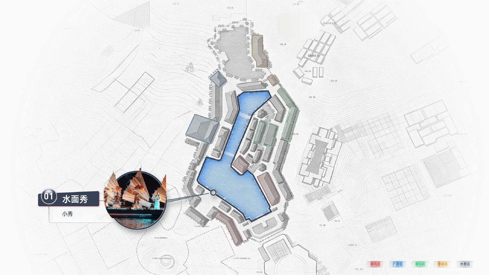
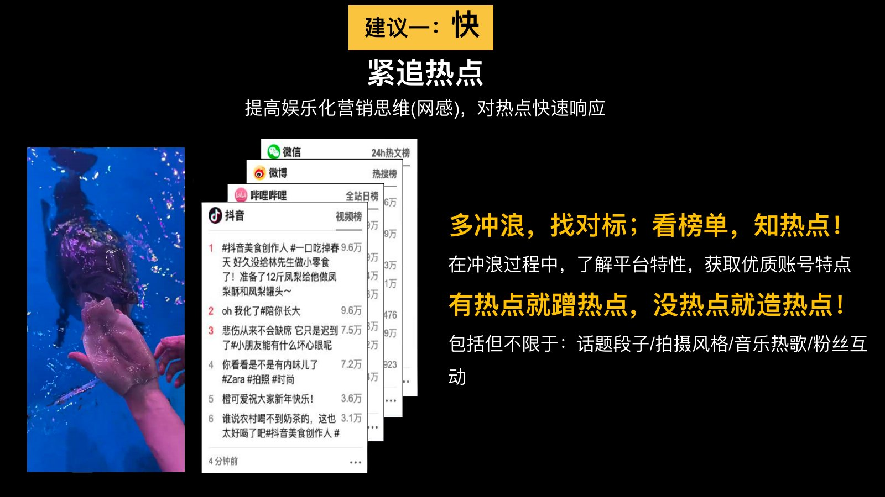
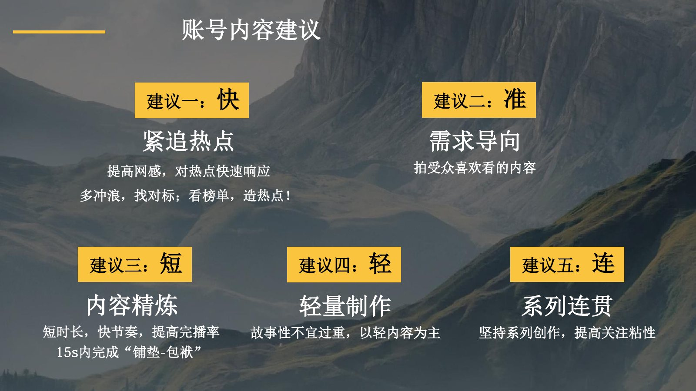
页面仅展示可公开的版式与信息组织；客户源文件不对外提供。
查看技能拆解 →项目与策划案例 / 08
每个条目单独展开。独立项目展示方案主线；合作项目只标注本人实际参与部分。
01
苏州阳澄半岛乐园 921 焕新一周年
集中打透“状元文化”，把周年庆、集团自媒体发布与国庆前转化放进同一套活动机制。
苏州阳澄半岛乐园 921 焕新一周年
集中打透“状元文化”，把周年庆、集团自媒体发布与国庆前转化放进同一套活动机制。
#苏州人人都是状元#
借一周年建品牌之势，行转化之实，强传播之阵。把本地文化符号从演艺项目，扩展成一套游客可参与、内容可传播、园区可承接的活动机制。
9 月是传统淡季，同时要为中秋国庆蓄客；继续叠加活动只会分散认知。
状元文化同时具备本地性、产品承接力和内容表达空间。
从趣味赛事、博物馆合作、高校引流到达人矩阵与全城巡游形成闭环。
02
海合安「自世代」计划
把五城员工、项目账号、动物 IP 与城市事件组织成一套持续供给内容、验证爆款并复制经验的机制。
海合安「自世代」计划
把五城员工、项目账号、动物 IP 与城市事件组织成一套持续供给内容、验证爆款并复制经验的机制。
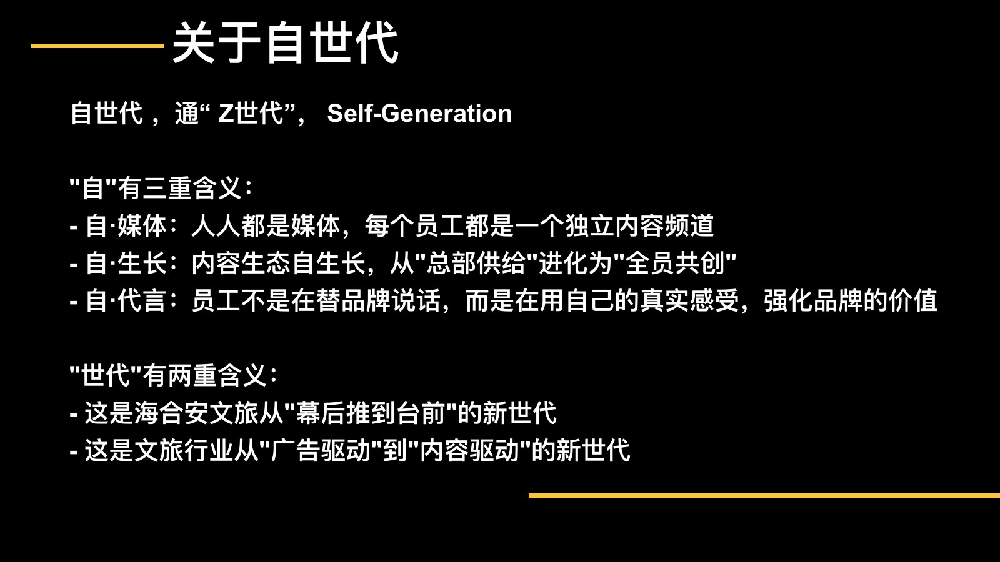
自媒体、自生长、自代言。
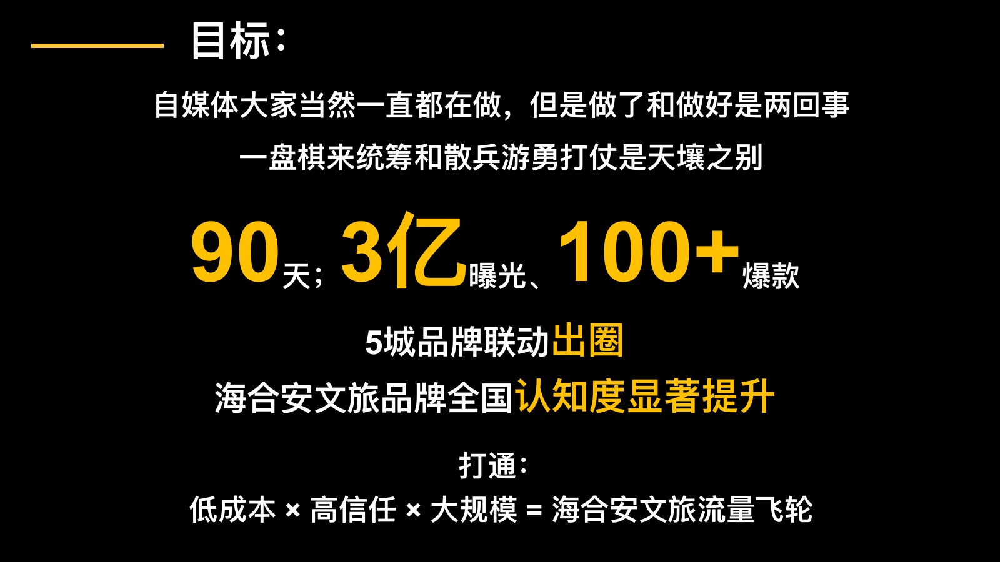
把五城联动落到同一张表。
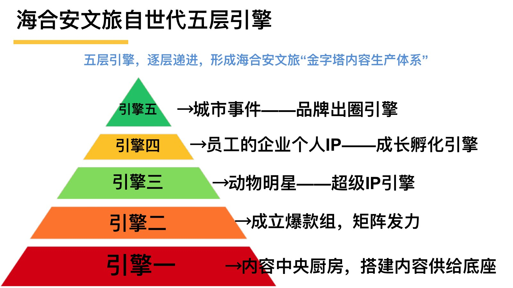
中央厨房 → 爆款组 → IP → 城市事件。
素材、模板与爆款经验无法低成本复用。
中央厨房供给素材，联合爆款组验证模板。
动物、员工与城市事件分别承担不同叙事任务。
03
晋城 2026 暑期营销方案
不止卷“22℃”，把古建、饮食、夏夜与群众文化组织成一套可体验、拍摄和消费的“凉方”。
晋城 2026 暑期营销方案
不止卷“22℃”，把古建、饮食、夏夜与群众文化组织成一套可体验、拍摄和消费的“凉方”。
太行山上好乘凉
游客不只是来避暑，而是进入一套晋城式的夏日生活方式。
温度不能解释游客为什么停留、参与和消费。
古建给空间，食养给味觉，习俗给社交，新派给内容。
用“业态词 + 体验词”形成互补版图。
04
王莽岭暑期营销方案
围绕“山地运动康养”梳理品牌焕新，把挂壁公路变成赛事、内容和产品都能承接的独特资产。
王莽岭暑期营销方案
围绕“山地运动康养”梳理品牌焕新，把挂壁公路变成赛事、内容和产品都能承接的独特资产。
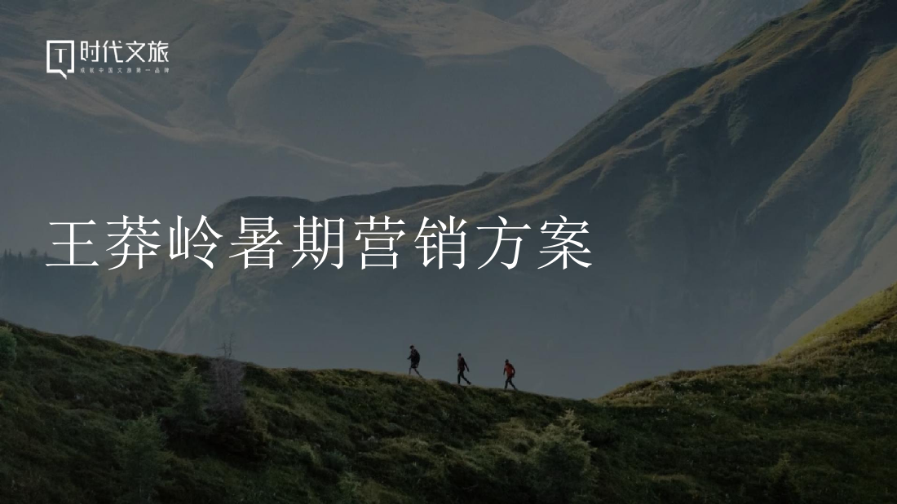
以山地图景建立运动康养语境。
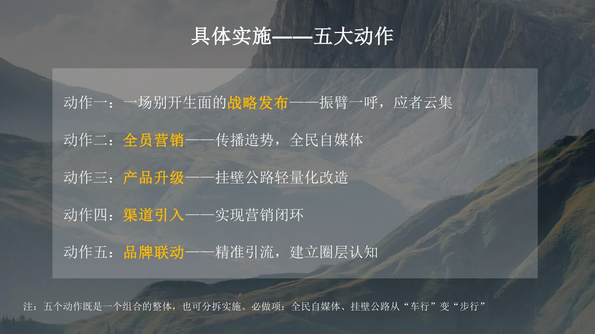
发布、全员营销、产品、渠道与品牌联动。
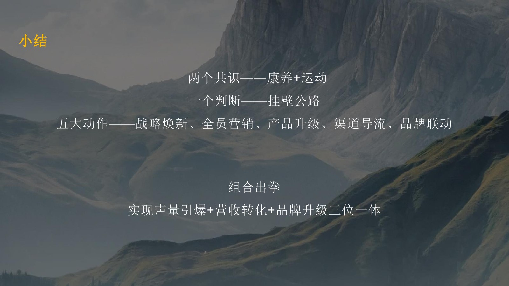
两个共识、一个判断与五个动作。
挂壁公路与山脊共同构成独特赛道。
参赛者提前抵达、赛后停留，传播素材也天然成立。
五个动作共同解决认识、参与与转化。
05
正佳动漫节活动方案
让主题包装、IP 蓄水、广场流量与消费凭证形成从到店到二次消费的闭环。
正佳动漫节活动方案
让主题包装、IP 蓄水、广场流量与消费凭证形成从到店到二次消费的闭环。
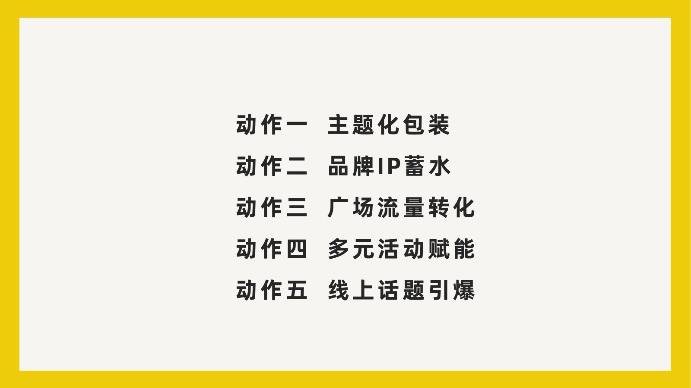
主题、IP、流量转化与线上引爆。
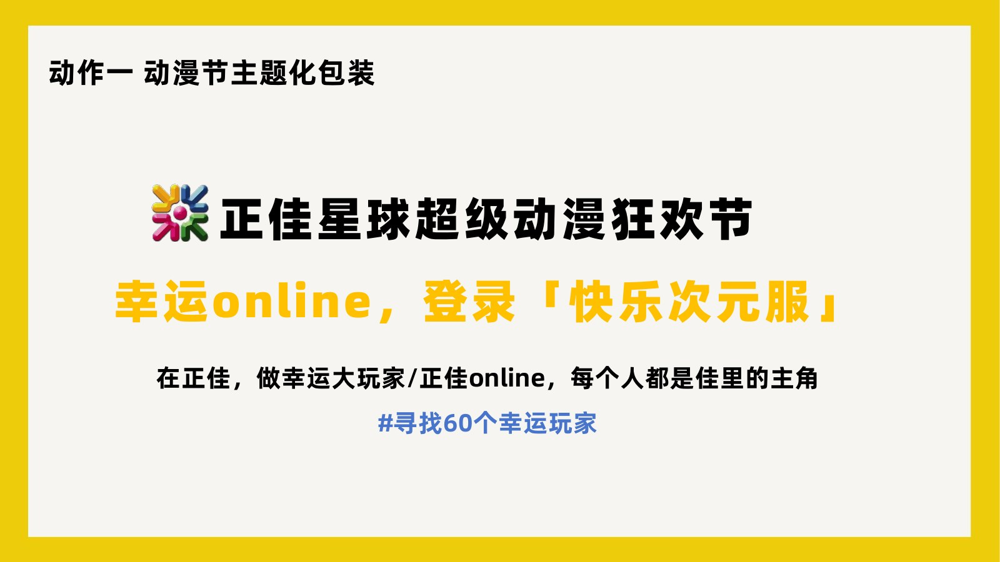
“快乐次元服”与幸运玩家机制。
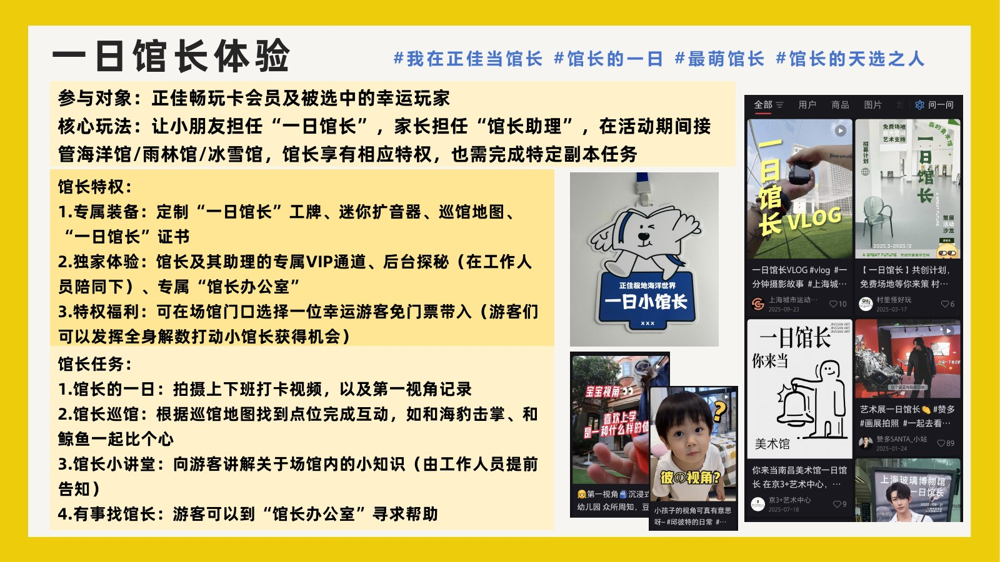
把游客身份转成可传播的角色体验。
目标从活动热度转向二次消费与复购。
游客登录、挑战、解锁身份并产生分享动机。
把一次节庆流量分发给更多经营单元。
06
正佳帽峰湾董事长汇报版
把岭南文化、商业消费与微度假产品组合成一个可以向高层解释、也能继续拆成产品的模型。
正佳帽峰湾董事长汇报版
把岭南文化、商业消费与微度假产品组合成一个可以向高层解释、也能继续拆成产品的模型。
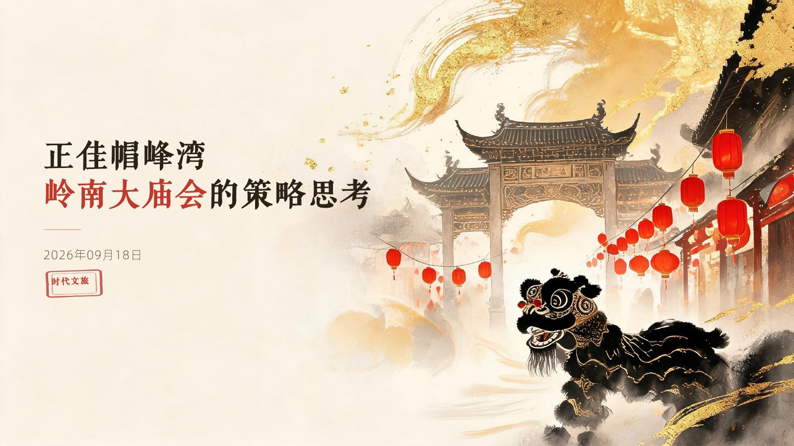
从项目资源进入文化定位。
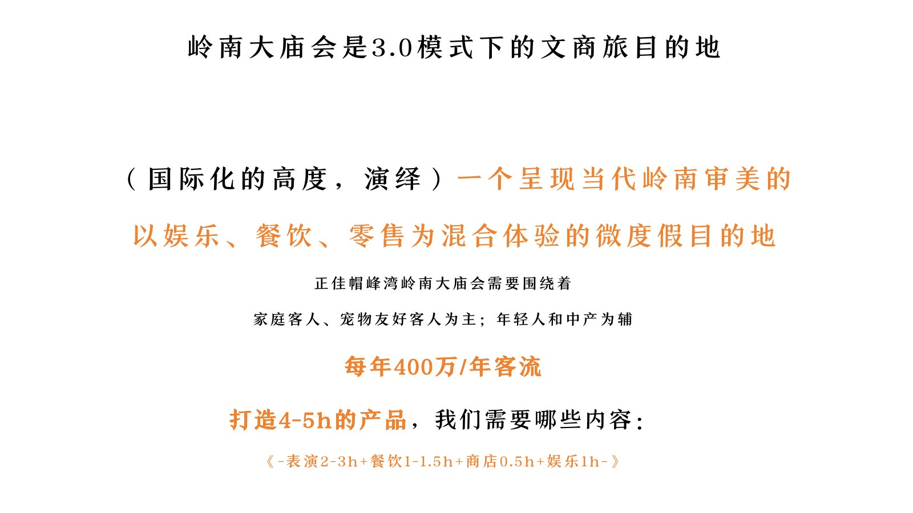
文化、娱乐、餐饮与零售混合体验。
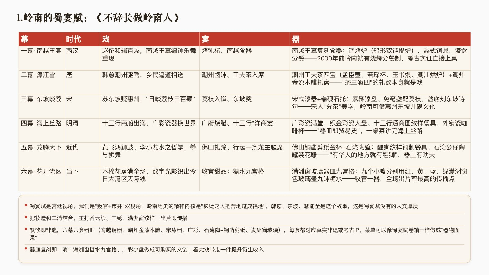
把文化表述继续拆成可售卖的场景。
从单次消费升级为家庭友好的文商旅体验。
用建筑、饮食、戏曲与非遗重新组织。
继续拆成时长、消费节奏、客群与经营单元。
07
中国主题公园战略营销峰会
独立接洽数十位文旅专家，把嘉宾邀约、行程确认、手册交付与现场催场接成一条可执行链路。
中国主题公园战略营销峰会
独立接洽数十位文旅专家，把嘉宾邀约、行程确认、手册交付与现场催场接成一条可执行链路。
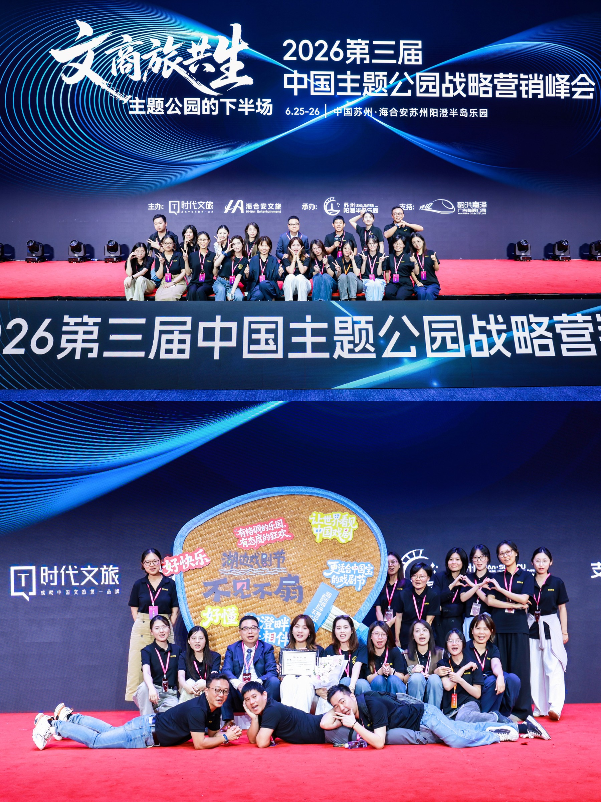
围绕峰会品牌与嘉宾内容形成统一表达。
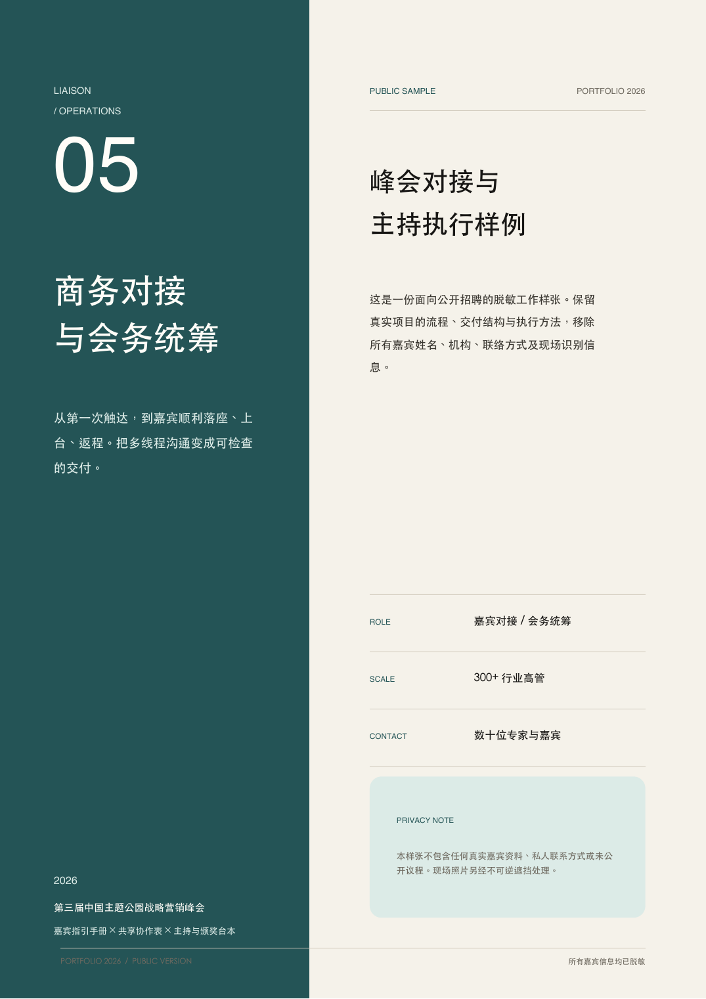
日程、动线、签到、座位与联系节点。
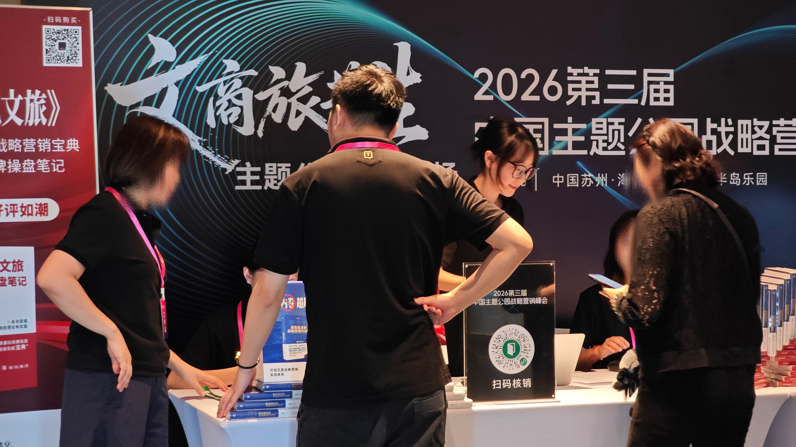
签到、答疑、催场与临时变化处理。
嘉宾、会务、采访和拍摄必须共用同一时间线。
行程、材料和发言节点逐项复核，临时变化写进共享表。
没有错过的行程、失真的信息或断掉的催场。
08
钙世英雄，甜伴三十
围绕娃哈哈 AD 钙奶 30 周年，完成市场分析、品牌机会、IP 创意、活动机制与传播节奏。
钙世英雄，甜伴三十
围绕娃哈哈 AD 钙奶 30 周年，完成市场分析、品牌机会、IP 创意、活动机制与传播节奏。
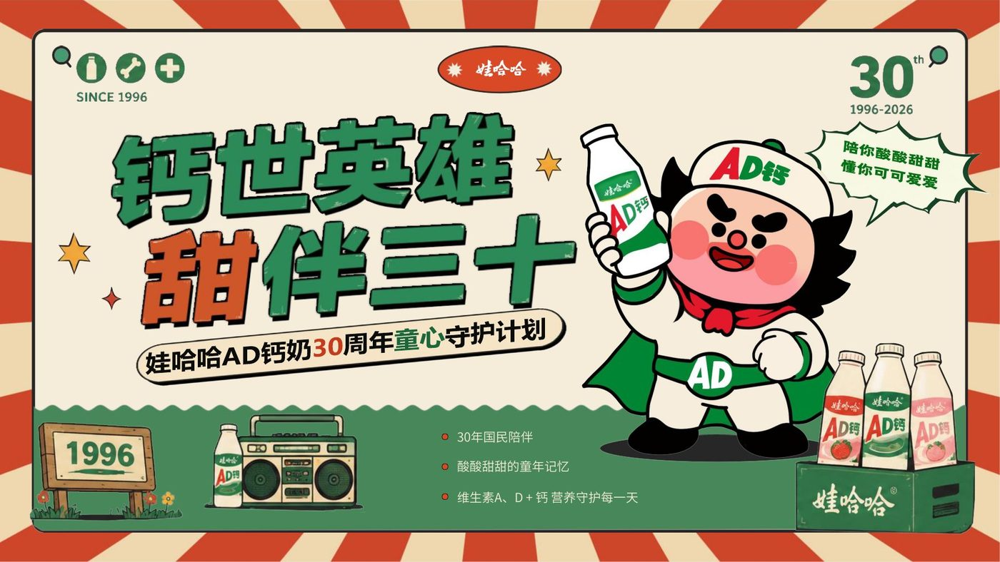
“钙世英雄，甜伴三十”的周年主视觉。
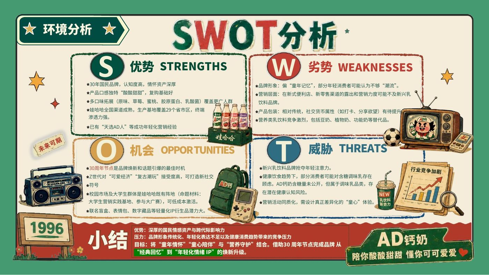
从品牌资产、年轻化压力与竞争环境中找机会。
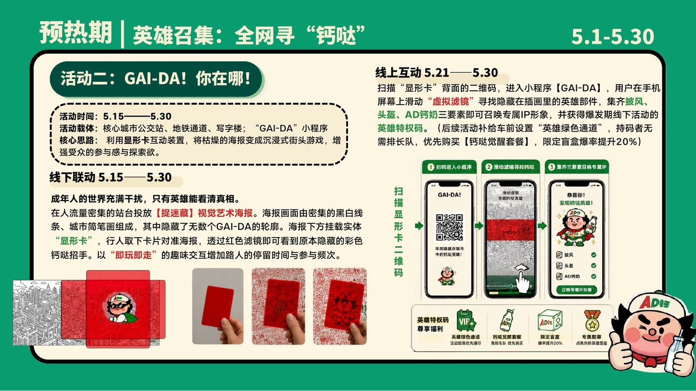
用“全网寻找钙哒”连接海报、装置与小程序。
把营养守护转译成“钙世英雄”的角色与行动。
让用户先玩起来，再接收品牌信息。
寻找感、体验与购买、内容收集分阶段推进。
其余项目，收进完整档案。
不重复展开。以下条目继续说明背景、职责、机制和可公开页面。
策划产出
不止是方案文本，也包括汇报材料、活动机制与传播排期。
创意底子
广告创意训练让我在策略之外，保留对表达与画面的敏感。